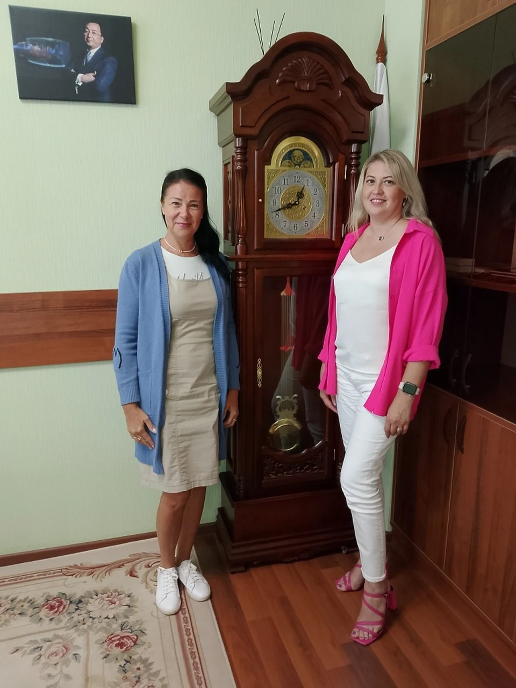

Уральский полиграфический десант: «Лазурь» встретилась с заводом «Пластмасс»
 Типография «Лазурь» работает круглосуточно — от печатного
цеха до участка с рулонами бумаги
Типография «Лазурь» работает круглосуточно — от печатного
цеха до участка с рулонами бумаги
Для промышленного предприятия сувенирная продукция — не мелочь: это лицо компании, которое видят партнёры и гости. Но найти типографию, которая сделает открытки, календари, ежедневники, а при необходимости и юбилейную книгу — качественно, в срок и за вменяемые деньги — задача не из лёгких. Особенно если завод работает с гособоронзаказом и каждая копейка под контролем. В поиске такого подрядчика челябинскому заводу «Пластмасс» помог проект «Комсомольской правды» — Челябинск» по возрождению промышленной кооперации: на завод приехала ведущий специалист типографии «Лазурь» из Режа Надежда Манькова.
Нужен местный поставщик
«Пластмасс» работает с гособоронзаказом, поэтому большинство подрядчиков определяется через торги. Но победителем часто становится компания из другого региона с самой низкой ценой — а потом начинаются проблемы с логистикой, особенно в предновогодний период. Заместитель генерального директора по административно-хозяйственной части Илья Моисеев рассказал, что однажды заказ разместили в Подмосковье, печать была готова к 20 декабря, а потом завод намучался с доставкой. Поэтому местный поставщик — гораздо удобнее.
А заказы у завода приличные: открытки к праздникам, бумажные пакеты, блокноты, ежедневники, ручки, футболки, бейсболки, конверты и другое. Раз в пять лет — юбилейная книга: через два года заводу исполнится 90 лет, и книгу закажут обязательно. Раньше для неё обращались к отдельным специалистам по вёрстке — в «Лазури» заверили, что у них есть свои дизайнеры и они готовы взять весь цикл на себя.
Цена под микроскопом
Всё, что связано с гособоронзаказом, контролируется строго — службы экономической безопасности проверяют каждую закупку. Но есть нюанс: закон позволяет не проводить торги для небольших заказов — а это как раз мелкие тиражи вроде открыток, блокнотов и ручек. Если «Лазурь» предложит конкурентную цену, завод сможет заключить с типографией прямой договор, без торговой площадки.
Кроме того, завод работает с поставщиками по схеме накопления заказов до определённой суммы с оплатой одним платежом — торги не нужны, можно работать с отсрочкой платежа при взаимном доверии. Илья Моисеев подтвердил такую возможность и для «Лазури»:
Если готовы работать в таком ключе — будет замечательно. — Илья Моисеев, заместитель генерального директора по АХЧ, завод «Пластмасс»
Договорённости
Стороны обсудили календари на следующий год — их закажут обязательно, и новогодние открытки: готовить их решили заранее, чтобы успеть напечатать тираж к 20 ноября. Также речь шла о мелких заказах — шильдиках с логотипом и наклейках вместо гравировки.
Надежда Манькова пообещала оперативно подготовить коммерческое предложение и рассказала о мощностях типографии: более сотни сотрудников, листовые печатные машины, чёрно-белая и ролевая печать, автоматизированный отдел упаковки.

Надежда Манькова («Лазурь») на встрече в заводоуправлении «Пластмасса»Встреча показала: у «Лазури» есть все шансы стать партнёром «Пластмасса» — близость, конкурентная цена и готовность брать мелкие тиражи делают типографию удобным поставщиком. Как подытожил представитель завода Борис Моисеев:
С удовольствием посотрудничаем, потому что вы рядом. — Борис Моисеев, завод «Пластмасс»
«Лазурь» в деталях
Типография «Лазурь» основана в 1997 году потомственным полиграфистом — это семейное предприятие, одно из первых на Урале освоившее цветную печать. Сегодня в портфеле — издательская продукция, упаковка и сувениры. С 2016 года работает направление упаковки из картона: есть оборудование от приёмных погрузчиков рулонов до автоматических линий, прямые контракты с заводами-производителями картона и склад на 200 тонн. Более ста сотрудников, собственный дизайн-отдел, круглосуточная работа и ежедневная доставка заказов.
Работаете с гособоронзаказом или ищете надёжного местного поставщика полиграфии?
Связаться с «Лазурью» →